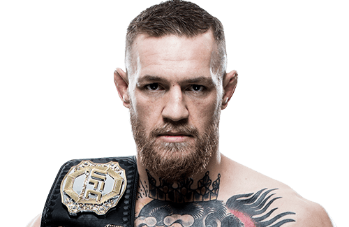
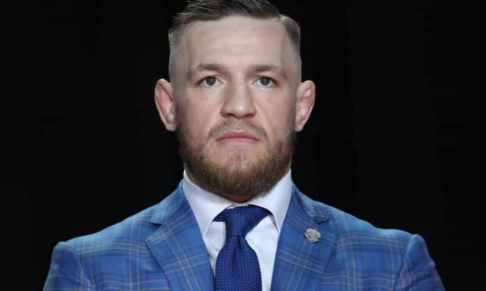
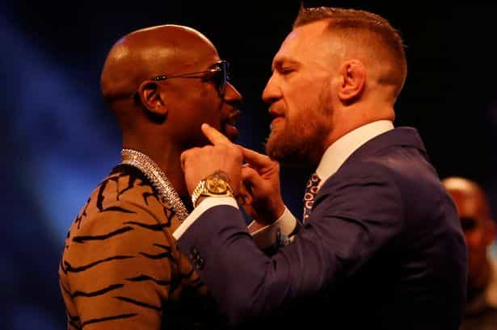
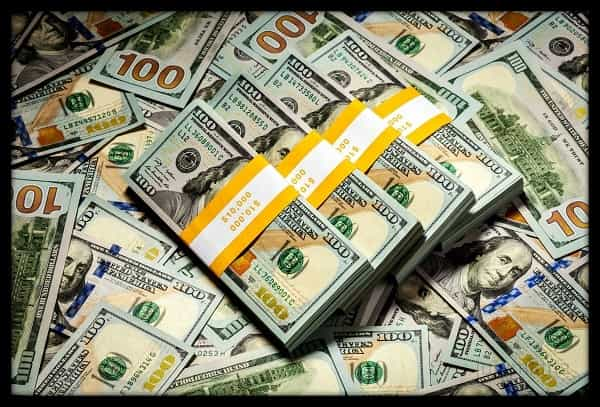

Conor McGregor is the UFC lightweight champion. He is the highest paid fighter in UFC history (which isn’t saying much as far as professional sports go, especially fighting sports).

Mike Tyson, in the 1980s, for example, was earning around $30 million per fight. Although the UFC is secretive about its payroll, it’s reported that Conor earned somewhere in the neighborhood of $5 to 10 million dollars for his last few fights. Most UFC fighters earn under $100,000 per fight, and the champions typically earn in the low millions or less. The fighters’ low pay is a constant topic of strife between them and management.
His Rise To Fame
Conor’s first fight in the UFC was in 2013 at the age of 25. He quickly earned a reputation of making short work of his opponents and also giving great fights, something the UFC has a history of rewarding with bigger and better fights.
In 2015, at the age of 27, Conor got his first title fight, which lasted 13 seconds, the fastest in UFC title fight history. He had become a champion in two years. Soon after, he got a chance to fight for a second belt at a different weight class, a fight he handily won in the second round with a knockout. Conor had become the first fighter in UFC history to simultaneously hold two belts in two weight classes.
Now, at 29, Conor is set to fight one of the greatest boxers in history: Floyd “Money” Mayweather. Conor will be making a rumored $100 million for this fight, which almost every expert has concluded he will lose and that this is a prop fight just for the money. The promotional tour has been laughably entertaining and, win or lose, the fight will be a huge success for both fighters.
The Ultimate Alpha Champion
What makes Conor the ultimate alpha male? There are many factors that make him the ultimate alpha, and we can all learn from him and maybe adopt some of his qualities. Keep in mind that he is only 29 years old and has had these qualities for years.
He has style

Conor wears fitted shirts, fitted suits, a trimmed beard, and has well-cut and groomed hair. He’s always presentable, whether it’s for a public event or just going about town. When asked about it, he said, “I like to look good, my friend.”
He’s outrageously confident

Alphas are confident. They should be. They look good. They’re fit. They have game. An alpha like Conor has an additional quality: he can get inside your head and start winning the fight verbally. His fight starts way before the actual fight. That’s how he gets his fights, and that’s how he wins his fights. A strong alpha should be able to hold his own verbally without losing his cool.
Conor was able to get two championship fights at two different weight classes. He did this not only by being a great fighter and giving great fights, but also by calling out the fighters he wanted to fight in such a way that they felt they had to fight him (see video below). After winning both belts he started calling out Mayweather.
Why would an MMA guy call out a boxer? Conor would have to box, which means no kicking or grappling. He would be at a terrible disadvantage against the world’s best living boxer, right? The obvious answer is for the money. The UFC, even for Conor, pays less than $10 million and a Mayweather fight could get him $100 million, right? Not so fast. Mayweather had no interest in fighting an MMA guy.
But Conor didn’t stop. The shit talking didn’t let up. MMA fans got interested. The UFC got interested. Mayweather got interested. Connor was told he couldn’t go off and box because he was an MMA fighter. He said, “If they (the UFC) let people go fight jiu-jitsu tournaments, they can’t stop me going to fight a boxing fight.” Hard to argue that logic. UFC fighters go off and compete in all kinds of other tournaments, both for free and for money.
Mayweather told Conor that if Conor made $5 million a fight (probably close to the truth), Mayweather would pay him $10 million. Conor said, “I’m not taking a pay cut to fight you. I want $100 million, not a penny less.”
Here’s what Conor said about his own shit talking: “You beat him verbally. You beat him mentally, and then finally, you beat him physically. That’s the three ways to beat a man.”
Some other Alpha qualities that Conor owns
1. Alphas are Persistent
Conor is not a quitter. He fought good fights and won them until he could start calling out the champ, and then he got the title fight and won. Then he did it again at a different weight class. Then he called out the greatest living boxer until he got that fight, too.
2. Alphas are Entertaining
There is no one in MMA, or, arguably, any other sport, more entertaining than Conor.
3. Alphas are Humble
Conor is far from humble before a fight, but when he lost to Diaz, he had this to say: “I’m humble in victory and in defeat. I respect Nate. It is what it is. I’ll face it like a man.” A true champion.
4. Alphas Are Courageous
It takes incredible courage to fight for a living. Anyone who has fought competitively knows this. But Conor has a special type of courage. He calls out champions and wins. Twice. Then he calls out the world’s best boxer, a sport in which he’s at a tremendous disadvantage. For the money? Maybe, but he has a reputation, too, and if he gets wiped out, he will look silly. Like he says in his commercial, “If your dreams don’t scare you, they’re not big enough.”
Conor Is The Smartest Athlete Alive

On August 26, 2017, Conor McGregor will transform himself from a modestly paid (by professional athlete standards) to one of the highest paid athletes in the world. All because he was able to talk himself into a fight with the greatest fighter alive and able to get his fans and then Mayweather’s fans excited about the possibility of a great fight between them. He was able to go from a first time UFC fighter to a $100 million dollar boxer in just four years. No one has ever done this in the history of the UFC, where the fighters line up to fight for $50,000, if that.
He will go from making $5 to $10 million per fight to possibly $100 million dollars (over $46,000 per second for a 12-round fight). Because he has the swagger, style, and hubris to pull it off. He’s a heavy underdog, but don’t count him completely out. Mayweather is famous for fighting to win scorecards, so we can expect him to fight for a 12 round decision. Conor fights to win fights, is only 29 years old (Mayweather is 40), and hits hard. There’s a chance, albeit small, that Conor wins this thing and gets to entertain Mayweather trying to get a rematch. That would put Conor on the receiving end of a $200 million dollar payday.
We could all borrow a little from Conor to make our lives better.
Read More: The Difference Between The Nice Guy, The Asshole, And The Alpha Male Learn To Be An Alpha From Athletes